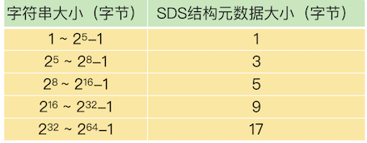
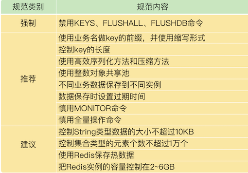

第五节 Redis的使用规范
1、键值对使用规范
- key 的命名规范，只有命名规范，才能提供可读性强、可维护性好的 key，方便日常管理；
- value 的设计规范，包括避免 bigkey、选择高效序列化方法和压缩方法、使用整数对象共享池、数据类型选择。
1-1 规范一：key 的命名规范
一个 Redis 实例默认可以支持 16 个数据库，可以把不同的业务数据分散保存到不同的数据库中。
但是，在使用不同数据库时，客户端需要使用 SELECT 命令进行数据库切换，相当于增加了一个额外的操作。
其实，我们可以通过合理命名 key，减少这个操作。具体的做法是，把业务名作为前缀，然后用冒号分隔，再加上具体的业务数据名。这样一来，我们可以通过 key 的前缀区分不同的业务数据，就不用在多个数据库间来回切换了。
比如说，如果我们要统计网页的独立访客量，就可以用下面的代码设置 key，这就表示，这个数据对应的业务是统计 unique visitor（独立访客量），而且对应的页面编号是 1024。
uv:page:1024
这里有一个地方需要注意一下。key 本身是字符串，底层的数据结构是 SDS。SDS 结构中会包含字符串长度、分配空间大小等元数据信息。从 Redis 3.2 版本开始，当 key 字符串的长度增加时，SDS 中的元数据也会占用更多内存空间。
SDS 结构中的字符串长度和元数据大小的对应关系如下表所示：

了减少 key 占用的内存空间，小建议：对于业务名或业务数据名，可以使用相应的英文单词的首字母表示，（比如 user 用 u 表示，message 用 m），或者是用缩写表示（例如 unique visitor 使用 uv）。
1-2 规范二：避免使用 bigkey
Redis 是使用单线程读写数据，bigkey 的读写操作会阻塞线程，降低 Redis 的处理效率。所以，在应用 Redis 时，关于 value 的设计规范，非常重要的一点就是避免 bigkey。
bigkey 通常有两种情况。
- 情况一：键值对的值大小本身就很大，例如 value 为 1MB 的 String 类型数据。为了避免 String 类型的 bigkey，在业务层，我们要尽量把 String 类型的数据大小控制在 10KB 以下。
- 情况二：键值对的值是集合类型，集合元素个数非常多，例如包含 100 万个元素的 Hash 集合类型数据。为了避免集合类型的 bigkey，设计规范建议是，尽量把集合类型的元素个数控制在 1 万以下。
建议只是为了尽量避免 bigkey，如果业务层的 String 类型数据确实很大，还可以通过数据压缩来减小数据大小；如果集合类型的元素的确很多，我们可以将一个大集合拆分成多个小集合来保存。
这里，还有个地方需要注意下，Redis 的 4 种集合类型 List、Hash、Set 和 Sorted Set，在集合元素个数小于一定的阈值时，会使用内存紧凑型的底层数据结构进行保存，从而节省内存。
例如，假设 Hash 集合的 hash-max-ziplist-entries 配置项是 1000，如果 Hash 集合元素个数不超过 1000，就会使用 ziplist 保存数据。
紧凑型数据结构虽然可以节省内存，但是会在一定程度上导致数据的读写性能下降。所以，如果业务应用更加需要保持高性能访问，而不是节省内存的话，在不会导致 bigkey 的前提下，你就不用刻意控制集合元素个数了。
1-3 规范三：使用高效序列化方法和压缩方法
为了节省内存，除了采用紧凑型数据结构以外，还可以遵循两个使用规范，分别是使用高效的序列化方法和压缩方法，这样可以减少 value 的大小。
Redis 中的字符串都是使用二进制安全的字节数组来保存的，所以，可以把业务数据序列化成二进制数据写入到 Redis 中。
不同的序列化方法，在序列化速度和数据序列化后的占用内存空间这两个方面，效果是不一样的。 比如说，protostuff 和 kryo 这两种序列化方法，就要比 Java 内置的序列化方法（java-build-in-serializer）效率更高。
业务应用有时会使用字符串形式的 XML 和 JSON 格式保存数据。
这样做的好处是，这两种格式的可读性好，便于调试，不同的开发语言都支持这两种格式的解析。
缺点在于，XML 和 JSON 格式的数据占用的内存空间比较大。为了避免数据占用过大的内存空间，我建议使用压缩工具（例如 snappy 或 gzip），把数据压缩后再写入 Redis，这样就可以节省内存空间了。
1-4 规范四：使用整数对象共享池
整数是常用的数据类型，Redis 内部维护了 0 到 9999 这 1 万个整数对象，并把这些整数作为一个共享池使用。
换句话说，如果一个键值对中有 0 到 9999 范围的整数，Redis 就不会为这个键值对专门创建整数对象了，而是会复用共享池中的整数对象。
那什么时候不能用整数对象共享池呢？主要有两种情况。
第一种情况是，如果 Redis 中设置了 maxmemory，而且启用了 LRU 策略（allkeys-lru 或 volatile-lru 策略），那么，整数对象共享池就无法使用了。这是因为，LRU 策略需要统计每个键值对的使用时间，如果不同的键值对都共享使用一个整数对象，LRU 策略就无法进行统计了。
第二种情况是，如果集合类型数据采用 ziplist 编码，而集合元素是整数，这个时候，也不能使用共享池。因为 ziplist 使用了紧凑型内存结构，判断整数对象的共享情况效率低。
2、数据保存规范
2-1 规范一：使用 Redis 保存热数据
为了提供高性能访问，Redis 是把所有数据保存到内存中的。
虽然 Redis 支持使用 RDB 快照和 AOF 日志持久化保存数据，但是，这两个机制都是用来提供数据可靠性保证的，并不是用来扩充数据容量的。而且，内存成本本身就比较高，如果把业务数据都保存在 Redis 中，会带来较大的内存成本压力。
所以，一般来说，在实际应用 Redis 时，我们会更多地把它作为缓存保存热数据，这样既可以充分利用 Redis 的高性能特性。
2-2 规范二：不同的业务数据分实例存储
虽然我们可以使用 key 的前缀把不同业务的数据区分开，但是，如果所有业务的数据量都很大，而且访问特征也不一样，我们把这些数据保存在同一个实例上时，这些数据的操作就会相互干扰。
一个场景：假如数据采集业务使用 Redis 保存数据时，以写操作为主，而用户统计业务使用 Redis 时，是以读查询为主，如果这两个业务数据混在一起保存，读写操作相互干扰，肯定会导致业务响应变慢。
建议你把不同的业务数据放到不同的 Redis 实例中 。这样一来，既可以避免单实例的内存使用量过大，也可以避免不同业务的操作相互干扰。
2-3 规范三：在数据保存时，要设置过期时间
对于 Redis 来说，内存是非常宝贵的资源，而且，Redis 通常用于保存热数据。热数据一般都有使用的时效性。
根据业务使用数据的时长，设置数据的过期时间。不然的话，写入 Redis 的数据会一直占用内存，如果数据持续增多，就可能达到机器的内存上限，造成内存溢出，导致服务崩溃。
2-4 规范四：控制 Redis 实例的容量
Redis 单实例的内存大小都不要太大，根据自己的经验值，建议你设置在 2~6GB 。这样一来，无论是 RDB 快照，还是主从集群进行数据同步，都能很快完成，不会阻塞正常请求的处理。
3、命令使用规范
3-1 规范一：线上禁用部分命令
Redis 是单线程处理请求操作，如果执行一些涉及大量操作、耗时长的命令，就会严重阻塞主线程，导致其它请求无法得到正常处理，这类命令主要有 3 种。
- KEYS，按照键值对的 key 内容进行匹配，返回符合匹配条件的键值对，该命令需要对 Redis 的全局哈希表进行全表扫描，严重阻塞 Redis 主线程；
- FLUSHALL，删除 Redis 实例上的所有数据，如果数据量很大，会严重阻塞 Redis 主线程；
- FLUSHDB，删除当前数据库中的数据，如果数据量很大，同样会阻塞 Redis 主线程。；
具体的做法是，管理员用 rename-command 命令在配置文件中对这些命令进行重命名，让客户端无法使用这些命令。
当然，你还可以使用其它命令替代这 3 个命令。
- 对于 KEYS 命令来说，你可以用 SCAN 命令代替 KEYS 命令，分批返回符合条件的键值对，避免造成主线程阻塞；
- 对于 FLUSHALL、FLUSHDB 命令来说，你可以加上 ASYNC 选项，让这两个命令使用后台线程异步删除数据，可以避免阻塞主线程。
3-2 规范二：慎用 MONITOR 命令
Redis 的 MONITOR 命令在执行后，会持续输出监测到的各个命令操作，所以，我们通常会用 MONITOR 命令返回的结果，检查命令的执行情况。
但是，MONITOR 命令会把监控到的内容持续写入输出缓冲区。如果线上命令的操作很多，输出缓冲区很快就会溢出了，这就会对 Redis 性能造成影响，甚至引起服务崩溃。
所以，除非十分需要监测某些命令的执行（例如，Redis 性能突然变慢，我们想查看下客户端执行了哪些命令），可以偶尔在短时间内使用下 MONITOR 命令，否则，建议你不要使用 MONITOR 命令。
3-3 规范三：慎用全量操作命令
对于集合类型的数据来说，如果想要获得集合中的所有元素，一般不建议使用全量操作的命令（例如 Hash 类型的 HGETALL、Set 类型的 SMEMBERS）。这些操作会对 Hash 和 Set 类型的底层数据结构进行全量扫描，如果集合类型数据较多的话，就会阻塞 Redis 主线程。
如果想要获得集合类型的全量数据，我给你三个小建议。
- 第一个建议是，你可以使用 SSCAN、HSCAN 命令分批返回集合中的数据，减少对主线程的阻塞。
- 第二个建议是，你可以化整为零，把一个大的 Hash 集合拆分成多个小的 Hash 集合。这个操作对应到业务层，就是对业务数据进行拆分，按照时间、地域、用户 ID 等属性把一个大集合的业务数据拆分成多个小集合数据。例如，当你统计用户的访问情况时，就可以按照天的粒度，把每天的数据作为一个 Hash 集合。
- 最后一个建议是，如果集合类型保存的是业务数据的多个属性，而每次查询时，也需要返回这些属性，那么，你可以使用 String 类型，将这些属性序列化后保存，每次直接返回 String 数据就行，不用再对集合类型做全量扫描了。
4、本节小结
4-1 规范分类

- 强制类别的规范：这表示，如果不按照规范内容来执行，就会给 Redis 的应用带来极大的负面影响，例如性能受损。
- 推荐类别的规范：这个规范的内容能有效提升性能、节省内存空间，或者是增加开发和运维的便捷性，你可以直接应用到实践中。
- 建议类别的规范：这类规范内容和实际业务应用相关，只是从经历或经验给你一个建议，你需要结合自己的业务场景参考使用。
4-1 业务层面主要面向的业务开发人员
- key 的长度尽量短，节省内存空间
- 避免 bigkey，防止阻塞主线程
- 4.0+版本建议开启 lazy-free
- 把 Redis 当作缓存使用，设置过期时间
- 不使用复杂度过高的命令，例如SORT、SINTER、SINTERSTORE、ZUNIONSTORE、ZINTERSTORE
- 查询数据尽量不一次性查询全量，写入大量数据建议分多批写入
- 批量操作建议 MGET/MSET 替代 GET/SET，HMGET/HMSET 替代 HGET/HSET
- 禁止使用 KEYS/FLUSHALL/FLUSHDB 命令
- 避免集中过期 key
- 根据业务场景选择合适的淘汰策略
- 1使用连接池操作 Redis，并设置合理的参数，避免短连接
- 只使用 db0，减少 SELECT 命令的消耗
- 读请求量很大时，建议读写分离，写请求量很大，建议使用切片集群
4-2 运维层面主要面向的是 DBA 运维人员
- 按业务线部署实例，避免多个业务线混合部署，出问题影响其他业务
- 保证机器有足够的 CPU、内存、带宽、磁盘资源
- 建议部署主从集群，并分布在不同机器上，slave 设置为 readonly
- 主从节点所部署的机器各自独立，尽量避免交叉部署，对从节点做维护时，不会影响到主节点
- 推荐部署哨兵集群实现故障自动切换，哨兵节点分布在不同机器上
- 提前做好容量规划，防止主从全量同步时，实例使用内存突增导致内存不足
- 做好机器 CPU、内存、带宽、磁盘监控，资源不足时及时报警，任意资源不足都会影响 Redis 性能
- 实例设置最大连接数，防止过多客户端连接导致实例负载过高，影响性能
- 单个实例内存建议控制在 10G 以下，大实例在主从全量同步、备份时有阻塞风险
- 设置合理的 slowlog 阈值，并对其进行监控，slowlog 过多需及时报警
- 设置合理的 repl-backlog，降低主从全量同步的概率
- 设置合理的
slave client-output-buffer-limit，避免主从复制中断情况发生 - 推荐在从节点上备份，不影响主节点性能
- 不开启 AOF 或开启 AOF 配置为每秒刷盘，避免磁盘 IO 拖慢 Redis 性能
- 调整 maxmemory 时，注意主从节点的调整顺序，顺序错误会导致主从数据不一致
- 对实例部署监控，采集 INFO 信息时采用长连接，避免频繁的短连接
- 做好实例运行时监控，重点关注
expired_keys、evicted_keys、latest_fork_usec，这些指标短时突增可能会有阻塞风险 - 扫描线上实例时，记得设置休眠时间，避免过高 OPS 产生性能抖动